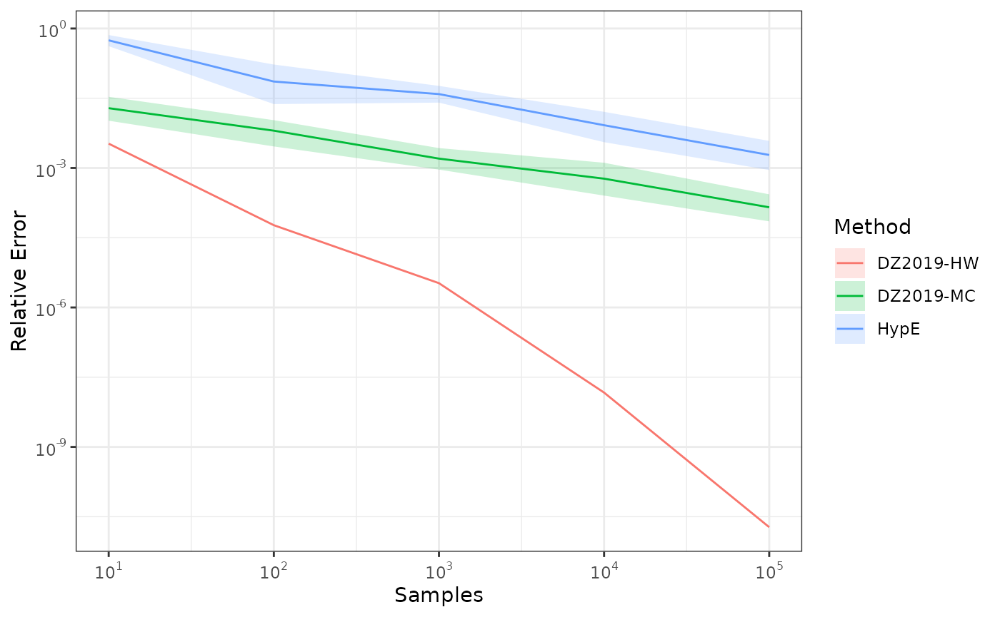
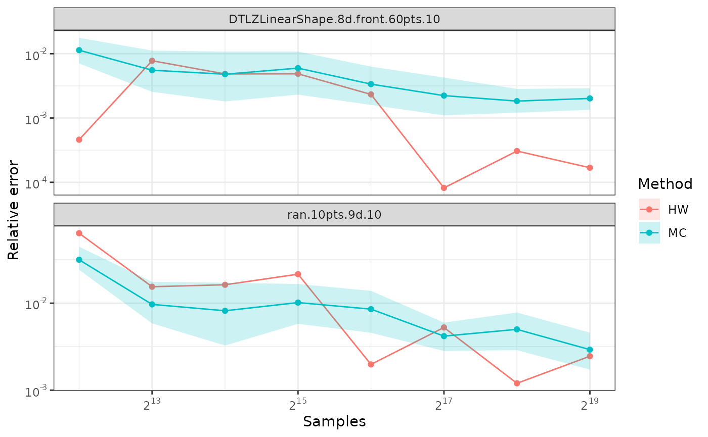

The following examples compare various ways of approximating the hypervolume of a nondominated set.
Comparing HypE and DZ2019
This example shows how to approximate the hypervolume metric of the
CPFs.txt dataset using both whv_hype() (HypE),
and hv_approx() (DZ2019) for several values of the number
of samples between
and
.
We repeat each calculation 10 times to account for stochasticity.
First calculate the exact hypervolume.
ref <- 2.1
data(CPFs)
x <- filter_dominated(CPFs[,1:2])
x <- normalise(x, to_range=c(1, 2))
true_hv <- hypervolume(x, reference = ref)
true_hv
#> [1] 1.057045Next, we approximate the hypervolume using random samples to show the higher samples reduce the approximation error. Since the approximation is stochastic, we perform 10 repetitions of each computation.
nreps <- 10
nsamples_exp <- 5
set.seed(42)
results <- list("HypE" = list(), "DZ2019-HW" = list(), "DZ2019-MC" = list())
df <- data.frame(Method=character(), rep=integer(), samples=numeric(), value=numeric())
for (i in seq_len(nsamples_exp)) {
df <- rbind(df,
# We use rep=c(1,1) to silence a ggplot2 warning with mean_cl_boot.
data.frame(Method="DZ2019-HW", rep=c(1,1), samples=10^i,
value = hv_approx(x, reference = ref, nsamples = 10^i, method="DZ2019-HW")),
data.frame(Method="HypE", rep=seq_len(nreps), samples=10^i,
value = sapply(seq_len(nreps), function(r)
whv_hype(x, reference = ref, ideal = 0, nsamples = 10^i, seed = 42 + r))),
data.frame(Method="DZ2019-MC", rep=seq_len(nreps), samples=10^i,
value = sapply(seq_len(nreps), function(r)
hv_approx(x, reference = ref, nsamples = 10^i, seed = 42 + r, method="DZ2019-MC")))
)
}
df[["error"]] <- abs(df[["value"]] - true_hv) / true_hv
res <- df %>% filter(samples == max(samples)) %>% group_by(Method) %>%
summarise(Mean = mean(value), Min = min(value), Max = max(value))
width <- nchar("Mean of DZ2019-MC")
text <- c(sprintf("%*s : %.12f", width, "True HV", true_hv),
sapply(res$Method, function(method)
sprintf("%*s : %.12f [min, max] = [%.12f, %.12f]", width,
paste0("Mean of ", method),
res[res$Method == method, "Mean"],
res[res$Method == method, "Min"],
res[res$Method == method, "Max"])))
cat(sep="\n", text)
#> True HV : 1.057044746430
#> Mean of DZ2019-HW : 1.057044746450 [min, max] = [1.057044746450, 1.057044746450]
#> Mean of DZ2019-MC : 1.057090931199 [min, max] = [1.056607935350, 1.057665468167]
#> Mean of HypE : 1.057059359998 [min, max] = [1.046272499998, 1.063736099998]Next, we plot the results.
library(ggplot2)
library(scales)
ggplot(df, aes(samples, error, color=Method)) +
stat_summary(fun = mean, geom = "line") +
stat_summary(fun.data = mean_cl_boot, geom = "ribbon", color = NA, alpha=0.2,
mapping=aes(fill=Method)) +
scale_x_log10(labels = label_log()) +
scale_y_log10(labels = label_log()) +
labs(x = "Samples", y = "Relative Error") +
theme_bw()
Comparing Monte-Carlo and quasi-Monte-Carlo approximations
The quasi-Monte-Carlo approximation with
method=DZ2019-HW is deterministic, but not monotonic on the
number of samples. Nevertheless, it tends to be better than the
Monte-Carlo approximation generated with method=DZ2019-MC,
specially with large number of objectives.
library(moocore)
library(ggplot2)
library(scales)
datasets <- c("DTLZLinearShape.8d.front.60pts.10", "ran.10pts.9d.10")
ref <- 10
samples <- 2 ** (12:19)
maxiter <- max(samples)
df <- NULL
for (dataset in datasets) {
x <- read_datasets(system.file(file.path("extdata", dataset),
package="moocore", mustWork=TRUE))
x <- x[, -ncol(x)] # Union of datasets.
x <- filter_dominated(x)[1:10, ]
exact <- hypervolume(x, reference=ref)
res <- list(
data.frame(Method="HW", samples = samples, seed = NA,
hv = sapply(samples, function(i)
hv_approx(x, reference=ref, nsamples=i, method="DZ2019-HW"))))
# Duplicate the observations to avoid a warning with mean_cl_boot
res <- c(res, res)
for (k in 1:10) {
seed <- 42 + k
res <- c(res, list(
data.frame(Method="MC", samples = samples, seed = seed,
hv = sapply(samples, function(i)
hv_approx(x, reference=ref, nsamples=i, method="DZ2019-MC", seed=seed)))))
}
res <- do.call("rbind", res)
res[["hverror"]] <- abs(1.0 - (res$hv / exact))
res[["dataset"]] <- dataset
df <- rbind(df, res)
}
ggplot(df, aes(x = samples, y = hverror, color = Method)) +
stat_summary(fun = mean, geom = "line") +
stat_summary(fun = mean, geom = "point") +
stat_summary(fun.data = mean_cl_boot, geom = "ribbon", color = NA, alpha=0.2,
mapping=aes(fill=Method)) +
scale_y_log10(labels = label_log(), breaks = 10^(-5:5)) +
scale_x_continuous(trans = "log2", labels = label_log(base=2)) +
labs(x = "Samples", y = "Relative error") +
facet_wrap(~dataset, scales="free_y",nrow=2) +
theme_bw()